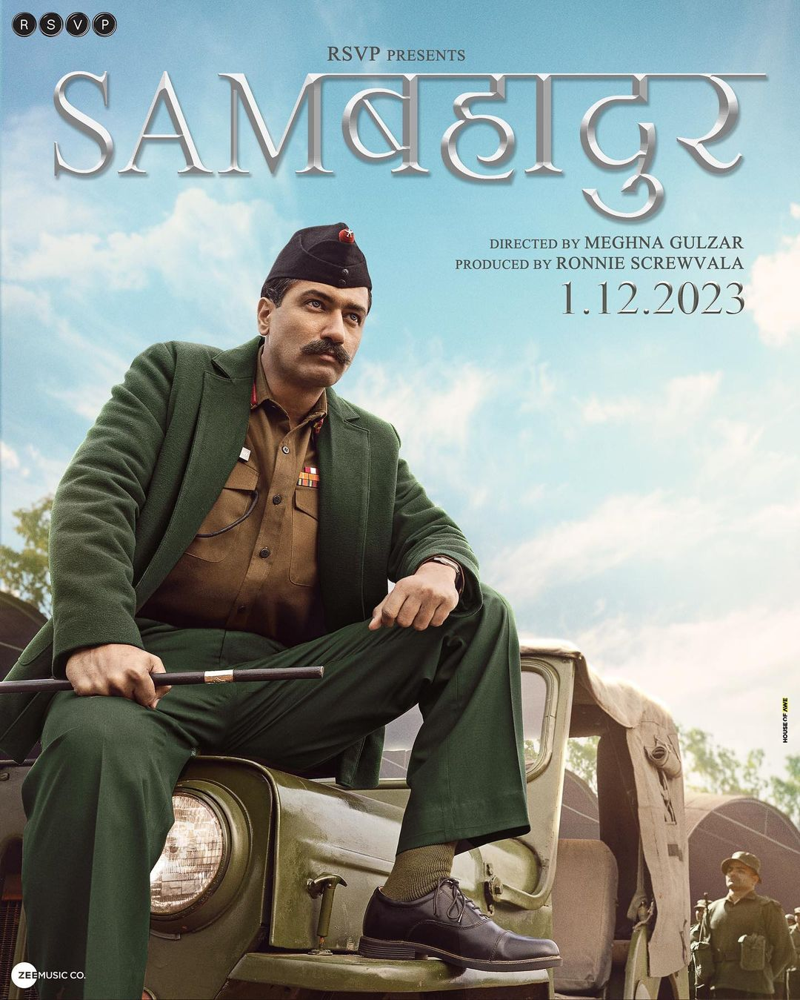

| Movie Name |
Description |
Ticket Price |
Link Bellow |
| Animal |
The film stars Ranbir Kapoor, Anil Kapoor, Bobby Deol, Rashmika Mandanna and Tripti Dimri. In the film, Ranvijay "Vijay" Singh learns about an assassination attempt on his father Balbir Singh by Haque and his brothers, where he sets out to exact revenge. |
300 |

|
| Hi Nanna |
The film stars Nani and Mrunal Thakur in the lead roles, alongside Baby Kiara Khanna, Priyadarshi Pulikonda, Angad Bedi and Viraj Ashwin in supporting roles. |
250 |
|
| Sam Bahadur |
Sam Bahadur is a tribute to Field Marshal Sam HFJ Manekshaw, MC, India`s first Field Marshal and a legendary Army General.
orld War II to being the Chief of Army Staff during the 1971 Indo-Pakistan war,
that led to the creation of Bangladesh. |
250 |

|